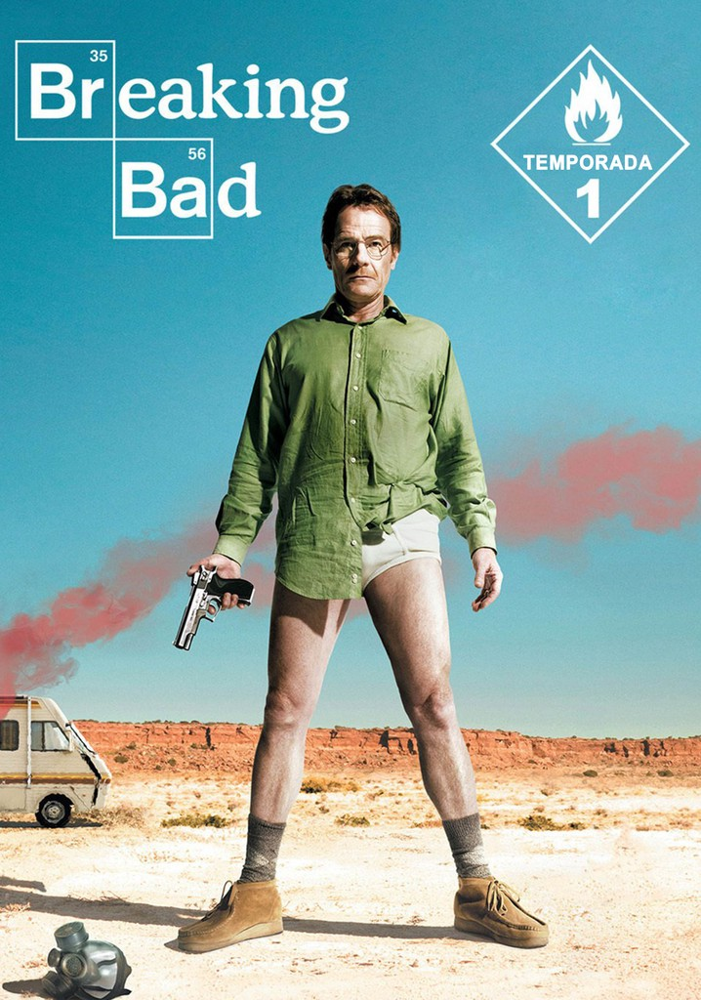
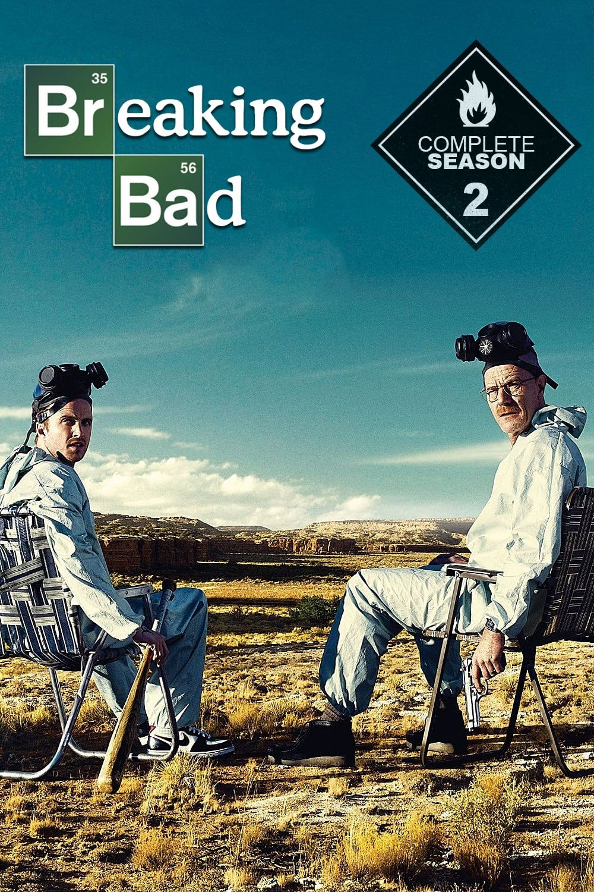
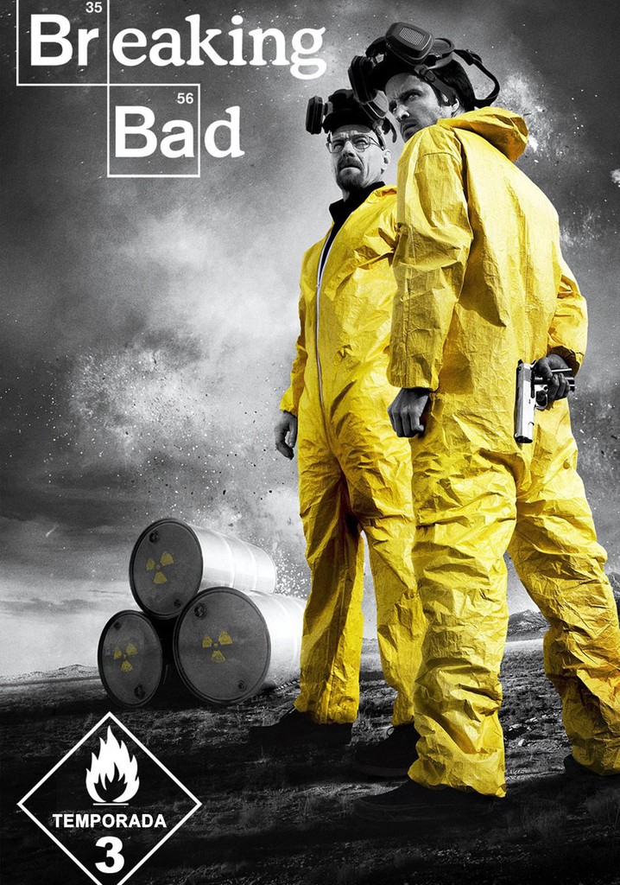
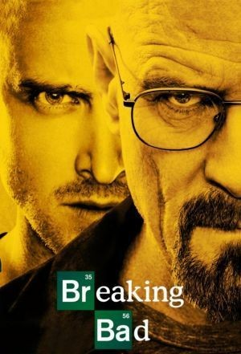
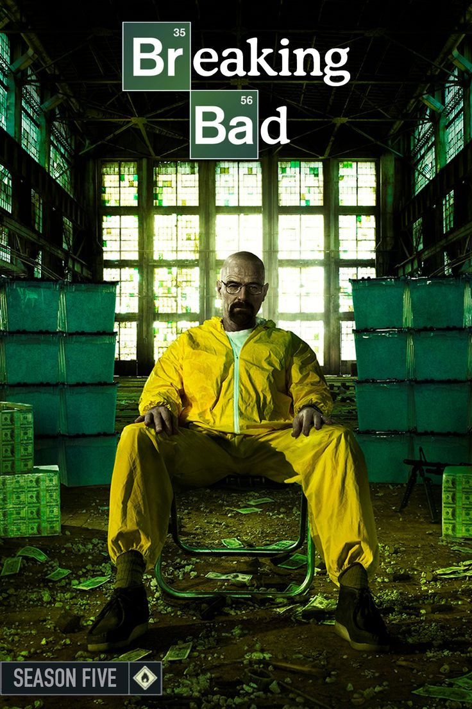
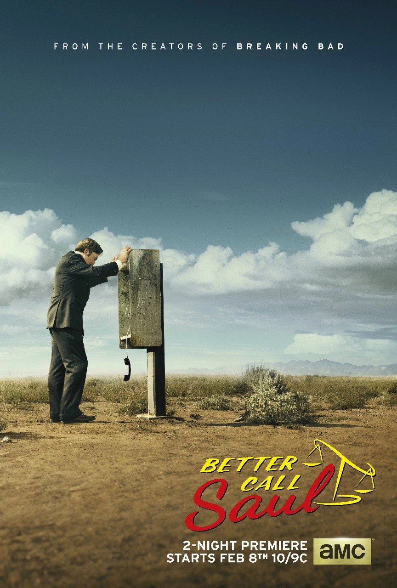
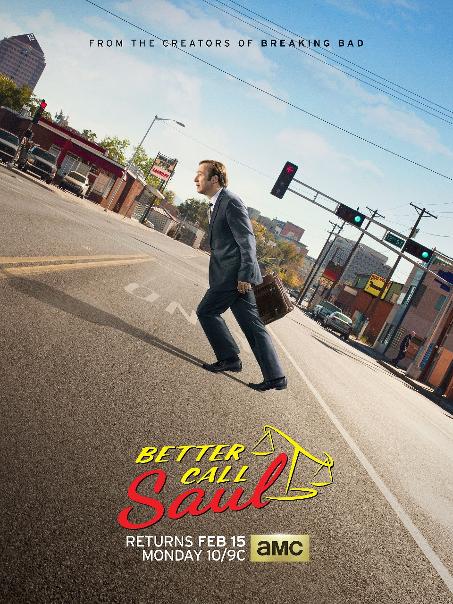
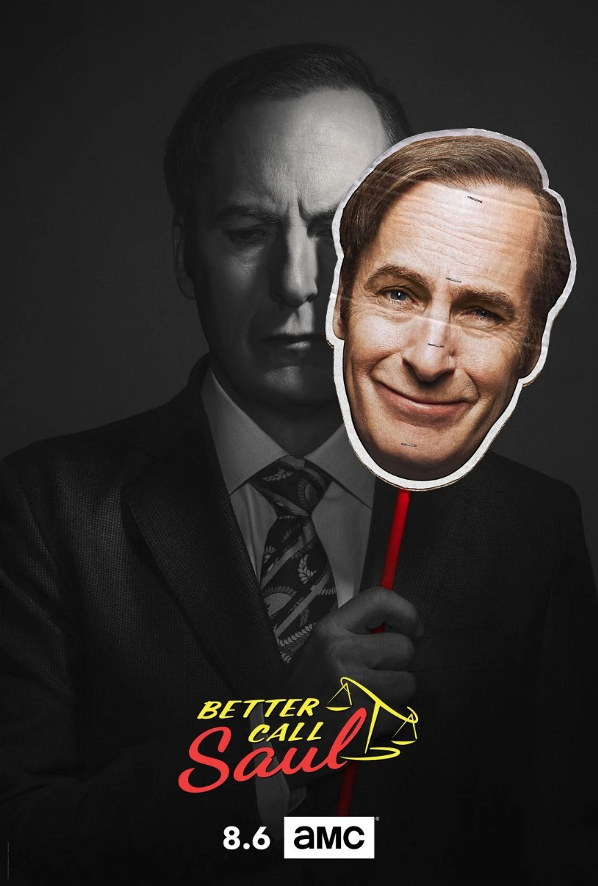
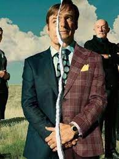
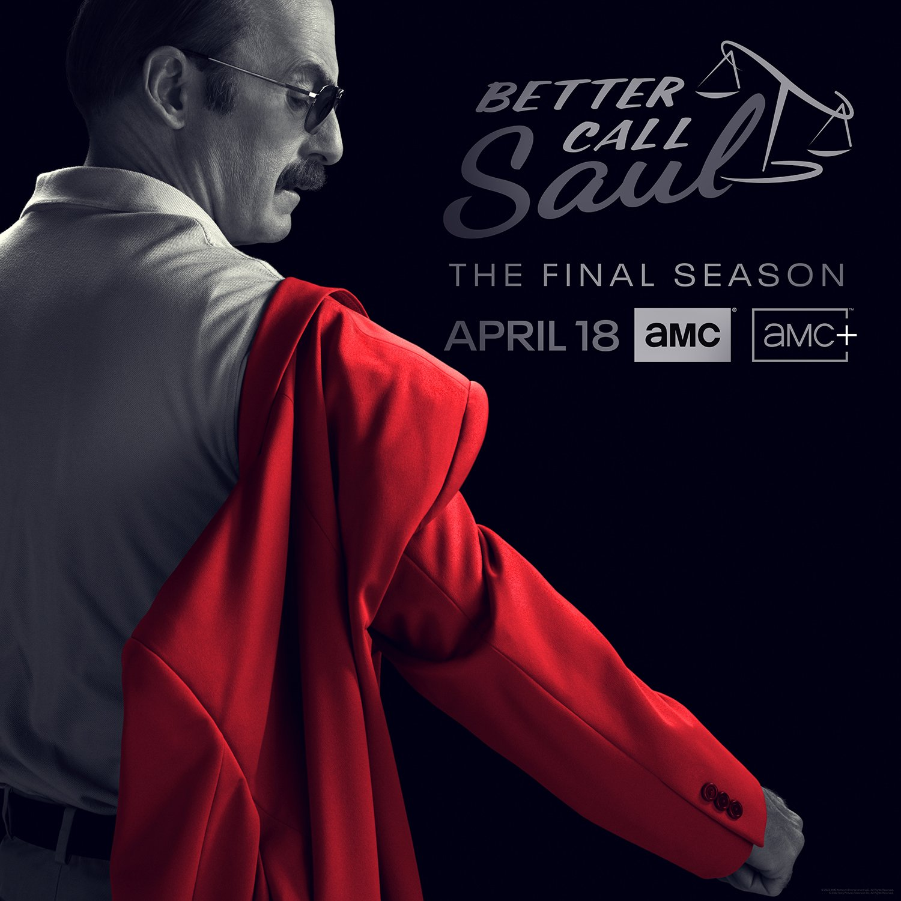

Breaking bad Temporada 1

"Tú conoces el negocio, y yo la química"
Walter White, un profesor de química con cáncer terminal, decide fabricar metanfetamina con la ayuda de su exalumno Jesse Pinkman para asegurar el futuro económico de su familia. Comienzan en un mundo peligroso que desconocen.
Breaking bad Temporada 2

"Better Call Saul"
Walter y Jesse enfrentan las consecuencias de sus acciones: problemas con la ley, conflictos con otros narcotraficantes y tensiones personales. Saul Goodman, un abogado poco convencional, aparece para ayudarlos.
Breaking bad Temporada 3

"Mosca"
Gus Fring, un poderoso narcotraficante, ofrece a Walter una oportunidad para expandir su negocio, pero bajo estrictas condiciones. La relación entre Walter y Jesse se vuelve más compleja y peligrosa.
Breaking bad Temporada 4

"No estoy en peligro, Skyler. Yo soy el peligro"
Se desata una guerra entre Walter y Gus, con estrategias, traiciones y asesinatos. Walter lucha por proteger su imperio y su familia mientras enfrenta amenazas letales.
Breaking bad Temporada 5

"Say my name"
Walter alcanza la cima de su imperio criminal, pero la ambición y las consecuencias de sus actos lo llevan a su caída. La temporada finaliza con enfrentamientos decisivos que cambian el destino de todos.
El Camino

El camino: A Breaking Bad Movie
Secuela de Breaking Bad que sigue a Jesse Pinkman tras escapar del cautiverio. La película muestra su lucha por liberarse del pasado y finalmente empezar de cero. Es un cierre introspectivo y definitivo para su historia.
Better Call Saul Temporada 1

El origen del abogado
Jimmy McGill lucha por ser un abogado serio mientras enfrenta la sombra de su hermano y su propio pasado de estafas
Better Call Saul Temporada 2

Primeros pasos en el lado oscuro
Jimmy empieza a usar métodos poco ortodoxos y su relación con Kim Wexler se fortalece, complicando su vida profesional y personal.
Better Call Saul Temporada 3

Conflicto y caída
La rivalidad con su hermano Chuck llega a su punto máximo, y Jimmy enfrenta graves consecuencias legales mientras se adentra en el mundo del crimen.
Better Call Saul Temporada 4

Transformación
Tras la muerte de Chuck, Jimmy abraza su identidad como Saul Goodman y se involucra más en actividades ilegales, mientras su relación con Kim se pone a prueba.
Better Call Saul Temporada 5

El abogado criminal
Saul se consolida en el mundo criminal, estableciendo vínculos con Gus Fring y enfrentando nuevos desafíos legales y personale
Better Call Saul Temporada 6

Camino a Breaking Bad
La historia llega a su fin con la transformación completa de Jimmy en Saul, cerrando su arco y conectando directamente con los eventos de Breaking Bad.